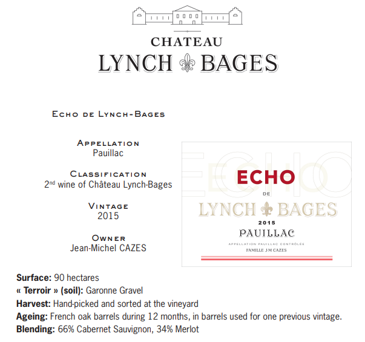

The Medoc
Pauillac
The leader on the Left Bank in number of first growth classified producers within its boundaries, Pauillac has more than any of the other appellations, at three of the five. Chateau Lafite Rothschild and Mouton Rothschild border St. Estephe on its northern end and Chateau Latour is at Pauillac’s southern end, bordering St. Julien.
While the first growths are certainly some of the better producers of the Left Bank, today they often compete with some of the “lower ranked” producers (second, third, fourth, fifth growth) in quality and value. The Left Bank of Bordeaux subscribes to an arguably outdated method of classification that goes back to 1855. The finest chateaux in that year were judged on the basis of reputation and trading price; changes in rank since then have been miniscule at best. Today producers such as Chateau Pontet-Canet, Chateau Grand Puy-Lacoste, Chateau Lynch-Bages, among others (all fifth growth) offer some of the most outstanding wines in all of Bordeaux.
Defining characteristics of fine wines from Pauillac (i.e. Cabernet-based Bordeaux Blends) include inky and juicy blackcurrant, cedar or cigar box and plush or chalky tannins.
Layers of gravel in the Pauillac region are key to its wines’ character and quality. The layers offer excellent drainage in the relatively flat topography of the region allowing water to run off into “jalles” or streams, which subsequently flow off into the Gironde.
Saint-Estephe
Deeply colored, concentrated, and distinctive, St. Estephe is the go-to for great, age-worthy and reliable Bordeaux reds. Separated from Pauillac merely by a stream, St. Estephe is the farthest northwest of the highest classed villages of the Haut Medoc and is therefore subject to the most intense maritime influence of the Atlantic.
St. Estephe soils are rich in gravel like all of the best sites of the Haut Medoc but here the formation of gravel over clay creates a cooler atmosphere for its vines compared to those in the villages farther downstream. This results in delayed ripening and wines with higher acidity compared to the other villages.
While they can seem a bit austere when young, St. Estephe reds prove to live very long in the cellar. Traditionally dominated by Cabernet Sauvignon, many producers now add a significant proportion of Merlot to the blend, which will soften any sharp edges of the more tannic, Cabernet.